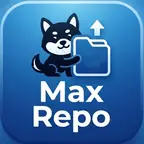
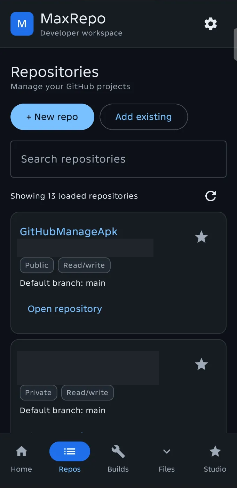
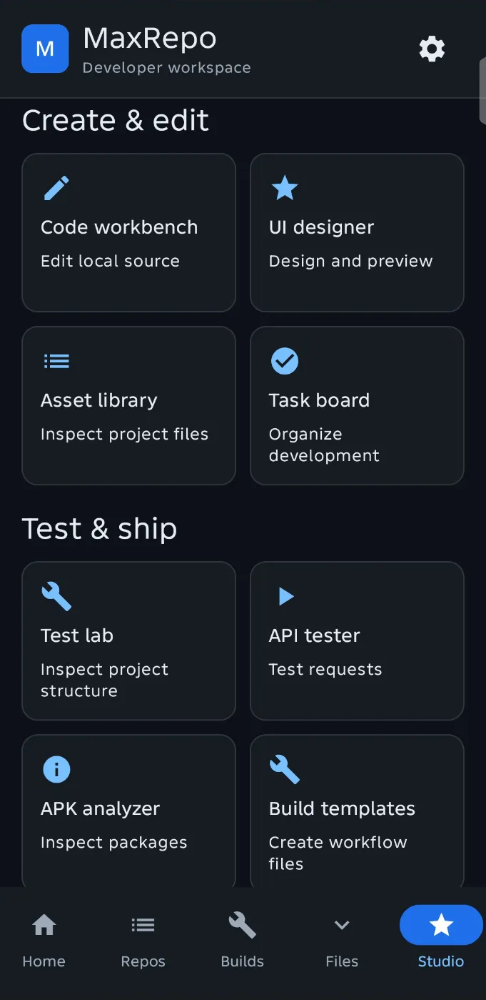
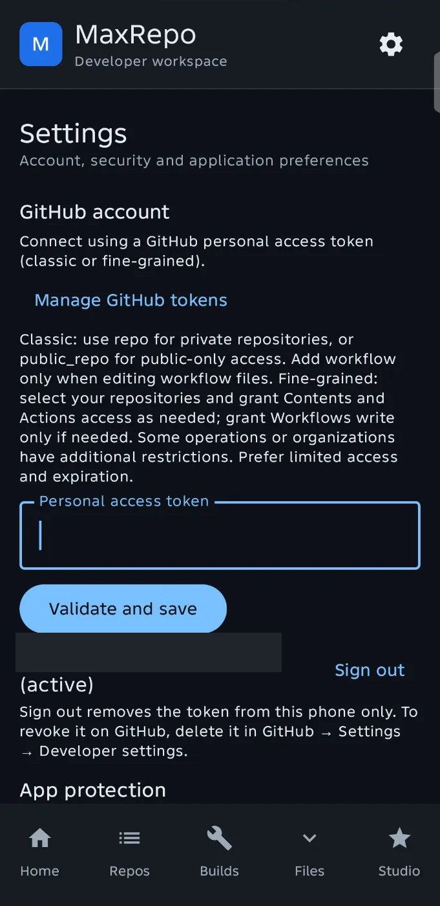

Repositories
Browse and manage your GitHub projects, branches and files.

MaxRepoI built MaxRepo to bring GitHub projects, build monitoring and useful developer tools together on your phone.
Get MaxRepoExplore featuresNot everyone has access to a powerful computer. I wanted to make working on software from a phone more accessible, so I built a workspace that puts everyday developer tasks in one place.
Browse and manage your GitHub projects, branches and files.
Track GitHub Actions, inspect logs and download build artifacts.
Manage downloads and check package information, checksums and signing compatibility.
Edit local source, preview UI, inspect assets and prepare workflow templates.
Inspect APKs and generate encrypted signing keystores locally.
Light and dark themes, touch-friendly navigation and local developer tools.
Earlier interface previews. Account identifiers and private repository names are redacted; the final build includes expanded repository settings.



The first public release is available. Android 10+ · APK 26.4 MiB · Free. Production signing and automated checks passed; the maintainer reported successful phone testing.
Download APK SHA-256 checksum Release detailsUse only the GitHub access you need and never share your tokens or signing keys. MaxRepo is an independent project, not affiliated with GitHub. Automated security checks passed on the final feature pull request; this is not a guarantee of security. Ongoing security and license review remains important.
Privacy notice · Security reporting · Send feedbackI want MaxRepo to remain accessible. The core app is free, and support is entirely optional. Feedback, bug reports and GitHub stars help the project. No donation payment link is configured yet.
Support the project on GitHub